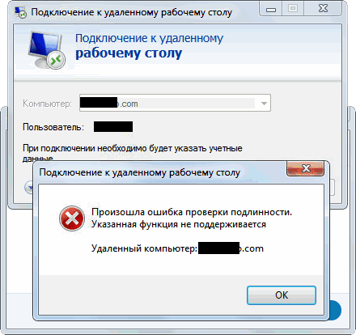

При подключении к удалённому рабочему столу (RDP) появляется ошибка: произошла ошибка проверки подлинности указанная функция не поддерживается. Как исправить? В новых билдах Windows данная ошибка несколько более информативна, но документ, описывающий её довольно объёмный и не содержит прямых ссылок на то, что нужно сделать.
Мы собрали весь материал в виде одной компактной статьи без лишней воды, только готовое решение.

Ошибка связана с майским обновлением Windows. В целях безопасности Microsoft закрыли возможность для обновлённых клиентов подключаться к не обновлённым серверам.
Временное решение данной проблемы - применить внести в реестр изменение, которое разрешит подключаться в любом случае. Выглядит оно так:
В разделе HKEY_LOCAL_MACHINE\SOFTWARE\Microsoft\Windows\CurrentVersion\Policies\System\CredSSP\Parameters нужно создать параметр AllowEncryptionOracle (тип DROWD 32-bit) со значением 2. Перезагрузка не нужна.
Кому лень копаться в реестре, можете скачать готовый .reg файл
Обновления, которые нужно скачать и установить на RDP клиенте и сервере находятся здесь: https://portal.msrc.microsoft.com/en-us/security-guidance/advisory/CVE-2018-0886
Качать нужно для своей версии Windows. Обновление кумулятивное, ставится долго, поэтому лучше ставить в нерабочее время.
Если вы не знаете какая версия (билд) Windows у вас, посмотрите статью Как узнать версию Windows?
Вот Статья от Microsoft об этом обновлении и о возникающей ошибке.